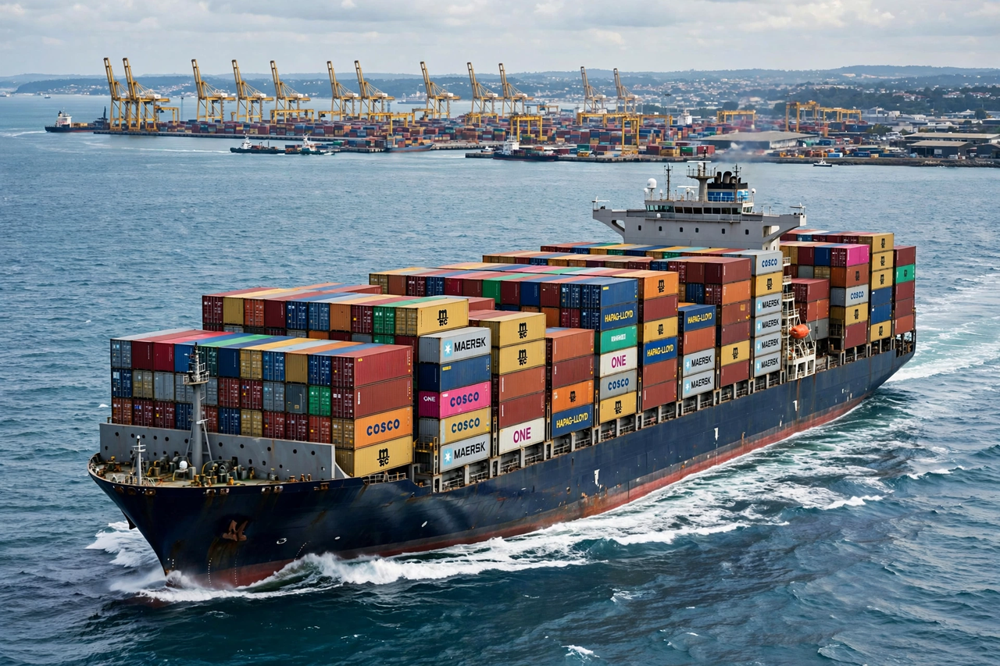

Globalization

[Image: a container ship loaded with shipping containers at a major port, symbolising global trade]Globalization (globalisation) is the process of increasing interconnection and interdependence among countries through flows of trade, Investment, people, information and culture. Its economic dimension — integrated world markets for goods, capital and (to a lesser degree) labour — has advanced in waves: a first great era before 1914, retreat between the wars, and rapid expansion after 1945 and especially after the Cold War, carried by container shipping, air freight, the internet and China's entry into the World Trade Organization in 2001.
Effects and backlash
Globalisation is credited with sharp falls in extreme Poverty (hundreds of millions in China and Asia), cheaper consumer goods and faster diffusion of technology; and blamed for deindustrialisation and wage pressure in rich countries (the 'China shock' literature), financial contagion, footloose corporations and tax competition. Since the 2008 crisis, Brexit, the US–China trade conflict of 2018 onward and the COVID-19 pandemic, the pace has stalled ('slowbalisation') and policy has turned toward industrial strategy, supply-chain security and 'friend-shoring'. Whether this is deglobalisation or reconfiguration remains contested among economists.